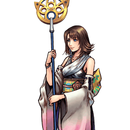
Final Fantasy X
Yuna
Invocatrice à disjoints : poke à mi-distance et génération d'EX supérieure
Position dans la méta
Tier B 21ᵉ sur 30 — tier list tournoi 2017 de dissidia.wiki (moitié valeurs de matchups, moitié avis de joueurs experts).
L'overview la situe historiquement en mid tier ou low tier : assez d'utilité pour se démarquer dans le roster, mais un potentiel bridé par ses dégâts sous la moyenne et sa conversion modeste.
Vue d'ensemble
Yuna est un personnage unique qui excelle grâce à des attaques disjointes à courte et moyenne portée. Chaque attaque invoque un aeon qui frappe à sa place : des pokes rapides jusqu'aux projectiles longue portée. L'essentiel tient aux aeons eux-mêmes : ils frappent au-delà de la portée de Yuna sans la faire avancer et sans hurtbox propre. C'est excellent pour le poke et le whiff punish, mais aussi pour toucher à travers des attaques Ranged de priorité supérieure là où d'autres personnages peinent. Elle dispose d'options pour la plupart des distances, ce qui lui permet de maintenir la pression où que soit l'adversaire.
Avec cet arsenal varié, Yuna construit sa jauge d'assist en toute sécurité en whiffant ses braveries, notamment Heavenly Strike, un coup Ranged Low très rapide. La plupart de ses HP attacks sont moins engageantes que celles des autres personnages et restent efficaces en neutral pour punir un mauvais déplacement ou contrôler l'espace. Comme beaucoup, elle dépend des assists et des reads en HP attack brute pour infliger des dégâts de HP : son seul combo solo vers une HP attack exige l'EX Mode, donc situationnel. En contrepartie, presque toutes ses attaques génèrent une quantité d'EX Force au-dessus de la moyenne, et son EX Mode ajoute des coups supplémentaires à toutes ses braveries, augmentant nettement les dégâts et la capacité à attraper les esquives — au prix d'un Heavenly Strike devenu vulnérable au stagger (hits de priorité melee).
Yuna fonctionne avec une grande variété de builds, y compris des builds hybrides axés gain d'EX. Son arme exclusive de niveau 100 offre un très précieux +3 m d'EX Intake Range : sans elle, ses disjoints la font peiner à absorber l'EX. Sa conversion en assist est moyenne avec la plupart des assists compétitives et elle ne dépend pas des murs pour ses combos, même s'ils aident. Ses grandes attaques de mi-distance valorisent aussi des capacités de déplacement supplémentaires comme Multi Air Slide.
Côté faiblesses : stats de base et dégâts de base des braveries faibles, qui plombent ses dégâts globaux tout en la rendant un peu plus fragile. Ses outils aériens, plutôt orientés projectiles, souffrent contre les attaques melee disjointes ou de haute priorité. Ses projectiles longue portée sont simples et neutralisés par les options défensives universelles ; combiné à sa lenteur de déplacement, amener un adversaire défensif dans sa zone optimale est difficile. Enfin, ses air dodges sont plus vulnérables que la moyenne (chute moyenne, accélération lente, absence d'option défensive fiable contre les attaques melee) ; le set Adamant Chains les sécurise mais sacrifie d'autres pans du build, ce qui lui convient mal.
Forces
- Mi-distance : une variété d'attaques qui poke et mixent hors de la portée de poke adverse, ou à travers des projectiles persistants.
- Flexibilité : un kit fiable et polyvalent qui autorise de nombreux builds différents selon le matchup.
- Génération de jauges : bons outils de construction d'assist ; EX au-dessus de la moyenne et accessible depuis tous ses coups avec des bonus d'EX Intake Range.
- Attaques atypiques : une bravery Ranged Low rapide (Heavenly Strike) et des HP attacks anti-approche très rapides.
- Accessible : un kit atypique mais direct, correct pour les nouveaux joueurs.
Faiblesses
- Anti-zoning limité : peu d'options pour forcer l'adversaire à entrer dans sa zone efficace.
- Mobilité : dash lent qui complique la poursuite d'un adversaire fuyard ou la course aux EX Cores ; air dodges risqués (chute lente, attaques aériennes les plus rapides en Ranged, pas d'attaque au sol très rapide).
- Stats de base faibles : puissance de base sous la moyenne et dépendance aux armes boostant l'EX Intake Range, d'où des dégâts souvent inférieurs au reste du cast.
Stats & vitesses
| Nom | Yuna (ユウナ) |
|---|---|
| Jeu d'origine | Final Fantasy X |
| ATK de base (LV100) | 110 (Average) |
| DEF de base (LV100) | 110 (Low) |
| Vitesse de course | 7 (Average) |
| Vitesse de dash | 85 (Slow) |
| Vitesse de chute | 89 (Below Avg.) |
| Chute après esquive | 40 (Average) |
| BRV la plus rapide | 11F (Heavenly Strike) |
| HP la plus rapide | 21F (Diamond Dust) |
| HP en 1 coup | Energy Ray |
| HP links | No |
| Command block | No |
| Armes | Guns Poles Rods Staves |
| Armures | Bangles Clothing Hairpins Hats Headbands Ribbons Robes |
| Armes exclusives | Yevon's Will Yunalesca's Staff Spira's Hope |
| Camp | Cosmos |
| Doubleur (JP) | Mayuko Aoki |
| Doubleur (ENG) | Hedy Burress |
Point or : ce personnage · petits points : le reste du cast · trait violet : moyenne. Valeurs du wiki, plus bas = plus rapide ; le rang à droite se lit directement (1ᵉʳ = le plus rapide).
Coups
Barre plus courte = coup plus rapide. Startup en frames (60 i/s, données dissidia.wiki), priorité indiquée après la valeur. Les coups marqués ★ sont les plus rapides du kit — ce sont en général vos meilleurs outils de punish et de pression.
Braveries
Au sol
Meteor Strike
Coup de griffe d'Ifrit au sol. Bon tracking vertical, grande hitbox, dégâts moyens et knockback un peu faible. Le premier coup se confirme en assist (Kuja par exemple) avec une fenêtre d'input généreuse. Startup lent pour une Melee Low : défensivement pauvre et vulnérable aux blocks. En EX Mode, deux hits de Shiva s'intercalent entre les griffes en gardant la longue fenêtre d'input, ce qui facilite la réaction pour un follow-up.
| Version | Damage multiplier | Startup frame | Type | Priority | EX Force | Effects | CP (Mastered) |
|---|---|---|---|---|---|---|---|
| Normal | 10, 20 (30) | 19F | Physical | Melee Low | 30 (30, 0) | Wall Rush | 30 (15) |
| EX Mode | 10, [5, 10], 20 (45) | 19F | Physical [Magical] | Melee Low [Ranged Low] | 30 | Wall Rush | - |
Normal Melee Low
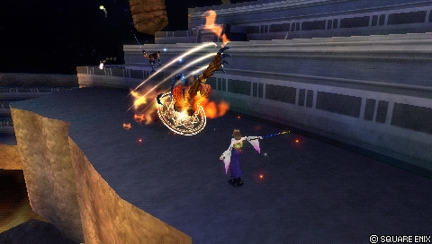
| Dégâts de base | 10, 20 (30) |
|---|---|
| Startup | 19F |
| Type | Physical |
| Priorité | Melee Low |
| EX Force | 30 (30, 0) |
| Effets | Wall Rush |
| Cancels | Dodge |
| Gain d'assist | Stale: 800 Fresh: 1050 |
| CP (maîtrisé) | 30 (15) |
EX Mode Melee Low [Ranged Low]
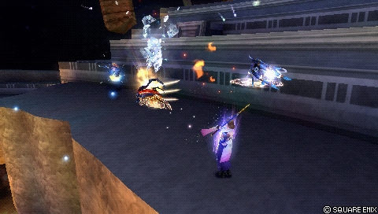
| Dégâts de base | 10, [5, 10], 20 (45) |
|---|---|
| Startup | 19F |
| Type | Physical [Magical] |
| Priorité | Melee Low [Ranged Low] |
| EX Force | 30 |
| Effets | Wall Rush |
| Cancels | Dodge |
| Gain d'assist | Stale: 950 Fresh: 1300 |
Aerospark
Ruée avec Ixion, Melee Mid : stagger les blocks normaux, donc outil sûr en sol-sol, anti-air et déni de zone. Après le launch, retarder au maximum le second appui fait tirer les 6 disques, l'un des rares moyens du jeu d'assurer un chase à vide contre la recovery attack. Rapide en startup et en recovery pour sa portée ; Ixion peut apparaître de l'autre côté d'obstacles fins pour un poke ultra-sûr. La version EX Mode met Yuna en l'air : dodge cancel vers l'adversaire puis Heavenly Strike EX sans mur, ou Diamond Dust près d'un mur — son seul combo solo vers une HP attack, difficile mais rentable.
| Version | Damage multiplier | Startup frame | Type | Priority | EX Force | Effects | CP (Mastered) |
|---|---|---|---|---|---|---|---|
| Normal | 3 x 4, 5 x 6 (42) | 27F | Physical (strike) > Magical (projectiles) | Melee Mid (strike) > Ranged Low (projectiles) | 90 (36, 53~54) | Chase | 30 (15) |
| EX Mode | 3 x 4, [10, 10], 5 x 6 (62) | 27F | Physical (strike) > Magical (projectiles) | Melee Mid (strike) > Ranged Low (projectiles) | 90 | Chase | - |
Normal Melee Mid (strike) Ranged Low (projectiles)
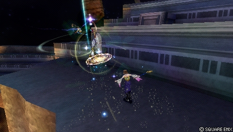
| Dégâts de base | 3 x 4, 5 x 6 (42) |
|---|---|
| Startup | 27F |
| Type | Physical (strike) Magical (projectiles) |
| Priorité | Melee Mid (strike) Ranged Low (projectiles) |
| EX Force | 90 (36, 53~54) |
| Effets | Chase |
| Cancels | Dodge |
| Gain d'assist | Stale: 920 Fresh:1170 |
| CP (maîtrisé) | 30 (15) |
EX Mode Melee Mid (strike) Ranged Low (projectiles)
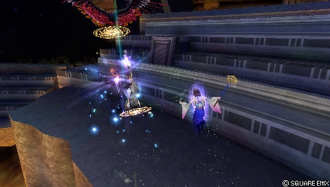
| Dégâts de base | 3 x 4, [10, 10], 5 x 6 (62) |
|---|---|
| Startup | 27F |
| Type | Physical (strike) Magical (projectiles) |
| Priorité | Melee Mid (strike) Ranged Low (projectiles) |
| EX Force | 90 |
| Effets | Chase |
| Cancels | Dodge |
| Gain d'assist | Stale: 1120 Fresh: 1370 |
Energy Blast
Projectiles multiples en cône via Valefor. Faible engagement, faible récompense : contré facilement par les options défensives universelles. Sert rarement de filler pendant une assist au sol ; non essentiel. La version EX ajoute une griffe d'Ifrit Melee Low rapide qui peut battre les tentatives de dash, sans plus.
| Version | Damage multiplier | Startup frame | Type | Priority | EX Force | Effects | CP (Mastered) |
|---|---|---|---|---|---|---|---|
| Normal | each 7 | 39F | Magical | Ranged Low | 0 | - | 30 (15) |
| EX Mode | [20], 7 each (27+) | 45F [15F] | Magical [Physical] | Ranged Low [Melee Low] | 0 | - | - |
Normal Ranged Low
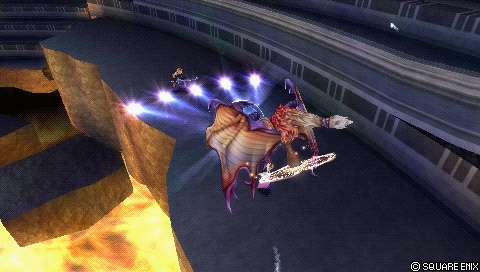
| Dégâts de base | each 7 |
|---|---|
| Startup | 39F |
| Type | Magical |
| Priorité | Ranged Low |
| EX Force | 0 |
| Cancels | Dodge |
| Gain d'assist | Stale: 570 Fresh: 820 |
| CP (maîtrisé) | 30 (15) |
EX Mode Ranged Low [Melee Low]
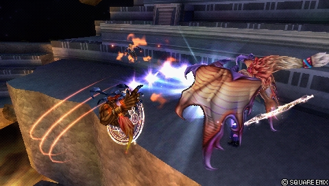
| Dégâts de base | [20], 7 each (27+) |
|---|---|
| Startup | 45F [15F] |
| Type | Magical [Physical] |
| Priorité | Ranged Low [Melee Low] |
| EX Force | 0 |
| Cancels | Dodge |
| Gain d'assist | Stale: 851 Fresh:1020 |
En l’air
Sonic Wings
Poke melee principal de Yuna : Valefor tournoie avec une hitbox énorme, un fort tracking vertical et un disjoint complet, mais un startup plus lent, vulnérable aux blocks réactifs à certaines distances. Après les premiers hits, une assist comme Kuja combote. Valefor étant loin de Yuna, sans Spira's Hope ou sans chase, l'adversaire absorbe l'essentiel de l'EX Force via Glutton. Son disjoint traverse certains projectiles de priorité supérieure (Flares de The Emperor, Knight's Lances chargées d'Ultimecia), très précieux dans ces matchups. En EX Mode, le dernier hit échange le chase contre un Wall Rush.
| Version | Damage multiplier | Startup frame | Type | Priority | EX Force | Effects | CP (Mastered) |
|---|---|---|---|---|---|---|---|
| Normal | 5 x 4, 15 (35) | 27F | Physical | Melee Low | 90 (30, 60) | Chase | 30 (15) |
| EX Mode | 5 x 4, [2 x 4, 10], 10 (48) | 27F | Physical | Melee Low | 30 | Wall Rush | 30 (15) |
Normal Melee Low
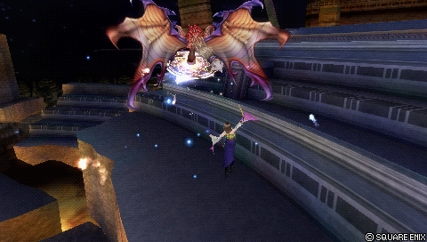
| Dégâts de base | 5 x 4, 15 (35) |
|---|---|
| Startup | 27F |
| Type | Physical |
| Priorité | Melee Low |
| EX Force | 90 (30, 60) |
| Effets | Chase |
| Cancels | Dodge |
| Gain d'assist | Stale: 850 Fresh: 1175 |
| CP (maîtrisé) | 30 (15) |
EX Mode Melee Low
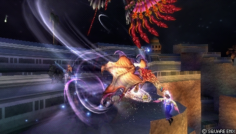
| Dégâts de base | 5 x 4, [2 x 4, 10], 10 (48) |
|---|---|
| Startup | 27F |
| Type | Physical |
| Priorité | Melee Low |
| EX Force | 30 |
| Effets | Wall Rush |
| Cancels | Dodge |
| Gain d'assist | Stale: 860 Fresh:1290 |
| CP (maîtrisé) | 30 (15) |
Heavenly Strike
Frappe de glace de Shiva légèrement déportée : LE poke aérien de Yuna pour construire l'assist. Startup de 11 frames, dans la tranche la plus rapide des pokes. Apparaît sur l'adversaire quand c'est possible, avec une portée haute et avant trompeuse, ce qui lui permet de toucher à travers des attaques qu'elle perdrait à la priorité. Ranged Low : Yuna ne stagger pas quand le coup est bloqué (évite les dégâts contre les HP attacks bloquées), mais perd totalement contre le dash et les attaques Melee Low — elle ne peut donc pas se défendre en clash à désavantage de frames, par exemple après un air dodge. Knockback un peu court ; l'assist se confirme encore sur le deuxième hit si Yuna est haute. En EX Mode, des hits d'Ixion (Melee Low) s'ajoutent : vulnérable aux blocks, mais portée accrue et meilleure réponse aux option selects de dash.
| Version | Damage multiplier | Startup frame | Type | Priority | EX Force | Effects | CP (Mastered) |
|---|---|---|---|---|---|---|---|
| Normal | 4, 6, 12 (22) | 11F | Magical | Ranged Low | 30 (15, 15) | Wall Rush | 30 (15) |
| EX Mode | 4, [4], 6, [4, 4], 12 (34) | 11F [19F] | Magical [Physical] | Ranged Low [Melee Low] | 30 | Wall Rush | - |
Normal Ranged Low
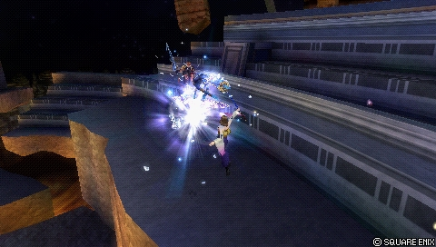
| Dégâts de base | 4, 6, 12 (22) |
|---|---|
| Startup | 11F |
| Type | Magical |
| Priorité | Ranged Low |
| EX Force | 30 (15, 15) |
| Effets | Wall Rush |
| Cancels | Dodge |
| Gain d'assist | Stale: 720 Fresh: 970 |
| CP (maîtrisé) | 30 (15) |
EX Mode Ranged Low [Melee Low]
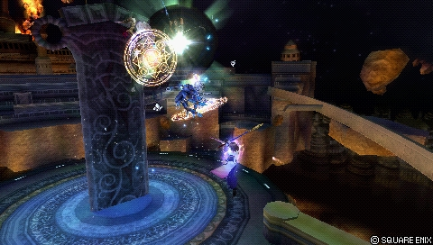
| Dégâts de base | 4, [4], 6, [4, 4], 12 (34) |
|---|---|
| Startup | 11F [19F] |
| Type | Magical [Physical] |
| Priorité | Ranged Low [Melee Low] |
| EX Force | 30 |
| Effets | Wall Rush |
| Cancels | Dodge |
| Gain d'assist | Stale: 840 Fresh: 1090 |
Impulse
Boule de feu longue portée de Bahamut, chargeable en 4 petits projectiles. Récompense faible, écartée d'un dash ou d'un block. Le tir simple, avec sa vitesse de projectile surprenante, sert de poke pour pêcher des counter hits Assist Charge. La version chargée est globalement pire : charge longue, portée légèrement plus courte, très télégraphiée et facilement punie par assist. Mais si plusieurs projectiles chargés touchent, un hit glitch permet d'enchaîner Heavenly Strike pour une confirmation en assist ou un knockdown.
| Version | Damage multiplier | Startup frame | Type | Priority | EX Force | Effects | CP (Mastered) |
|---|---|---|---|---|---|---|---|
| Normal | 10 (uncharged) / each 5 (charged) | 39F | Magical | Ranged Low | 0 | - | 30 (15) |
| EX Mode | 10 / [10] each 5 | 39F | Magical | Ranged Low | 0 | - | - |
Normal Ranged Low
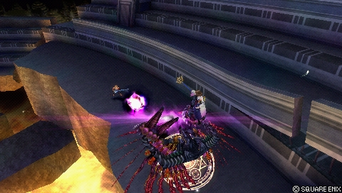
Uncharged Ranged Low
| Dégâts de base | 10 |
|---|---|
| Startup | 39F |
| Type | Magical |
| Priorité | Ranged Low |
| EX Force | 0 |
| Cancels | Dodge |
| Gain d'assist | Stale: 600 Fresh: 850 |
| CP (maîtrisé) | 30 (15) |
Charged Ranged Low
| Dégâts de base | Each 5 |
|---|---|
| Startup | 39F |
| Type | Magical |
| Priorité | Ranged Low |
| EX Force | 0 |
| Cancels | Dodge |
| Gain d'assist | Stale: 700 (all hits) Fresh: 950 (all hits) |
| CP (maîtrisé) | 30 (15) |
EX Mode Ranged Low
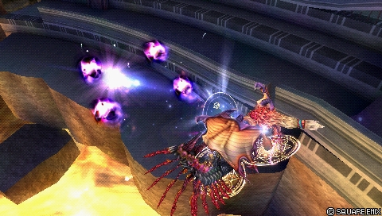
| Dégâts de base | 10 / [10] each 5 |
|---|---|
| Startup | 39F |
| Type | Magical |
| Priorité | Ranged Low |
| EX Force | 0 |
Attaques HP
Au sol
Hellfire Melee High (claw) Ranged High (pillars)
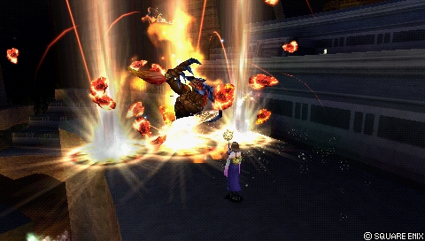
Piliers de feu anti-approche très actifs, hauts et larges — à utiliser quand l'adversaire approche par les airs ou le sol (ne touche pas juste au-dessus de Yuna). HP attack très rapide pour sa puissance, excellent anti-air et très bonne contre les esquives proches grâce aux frames actives énormes. La griffe d'Ifrit est sa Melee High la plus rapide et la plus sûre, son option de réflexion des Ranged High. Les piliers servent de 1-hit HP contre un adversaire à jauge EX pleine et le knockback se convertit en combo avec un timing précis de l'assist Kuja.
| Dégâts de base | 10 |
|---|---|
| Startup | 37F |
| Type | Physical |
| Priorité | Melee High (claw) Ranged High (pillars) |
| EX Force | 60~150 |
| Cancels | Dodge |
| Gain d'assist | Stale: 600 (claw) Fresh: 850 (claw) |
| CP (maîtrisé) | 30 (15) |
Energy Ray Ranged High
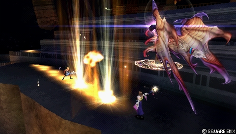
HP attack longue portée : Valefor trace une ligne qui explose verticalement après un court délai. Le léger tracking courbé force les personnages lents à esquiver de côté, sans vraiment attraper les esquives. Atteint vite sa distance maximale ; utile pour forcer une esquive latérale avec assist en soutien ou punir un long whiff. Très vulnérable aux punish d'assist à la réaction — à utiliser avec prudence.
| Startup | 59F |
|---|---|
| Priorité | Ranged High |
| EX Force | 60 |
| Cancels | Dodge |
| CP (maîtrisé) | 30 (15) |
En l’air
Thor's Hammer Ranged High
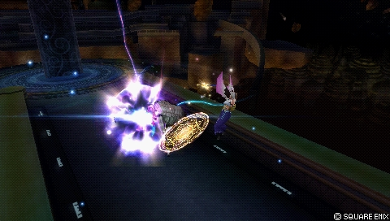
Ixion place un orbe électrique aspirant presque n'importe où sur 360°, mais distance maximale et taille de l'orbe limitées. À employer à distance semi-proche quand l'adversaire, en gros désavantage de frames, va probablement esquiver. Laisse Yuna très exposée aux punish d'assist et aux attaques rapides de mi-distance ; l'adversaire récupère souvent l'EX généré via Glutton. Diamond Dust reste un check des blocks plus sûr en neutral.
| Dégâts de base | 2 x 5 (10) |
|---|---|
| Startup | 49F |
| Type | Magical |
| Priorité | Ranged High |
| EX Force | 90 |
| Effets | Absorb |
| Cancels | Dodge |
| Gain d'assist | Stale: 600 Fresh: 850 |
| CP (maîtrisé) | 30 (15) |
Diamond Dust Ranged High
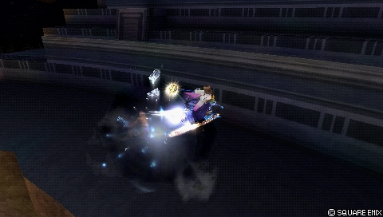
Nuage de glace persistant de Shiva : anti-approche et mixup très rapides, surtout contre les attaques melee qui avancent. Tracking vertical étonnamment fort (combote même après Aerospark EX). Le dernier hit envoie l'adversaire droit vers le haut pour des conversions faciles en assist. Si l'adversaire déclenche les hits en fin de frames actives, Yuna redevient actionnable avant la fin du hit stun : vrai combo derrière, Heavenly Strike étant le plus pratique.
| Dégâts de base | 2 x 5 (10) |
|---|---|
| Startup | 21F |
| Type | Magical |
| Priorité | Ranged High |
| EX Force | 90 |
| Cancels | Dodge |
| Gain d'assist | Stale: 600 Fresh: 850 |
| CP (maîtrisé) | 30 (15) |
Mega Flare Melee High
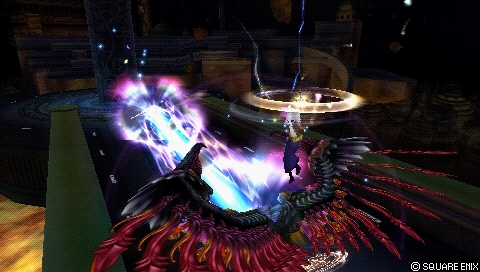
Bahamut tire un gros laser à mi-distance : bons dégâts et seule HP attack de Yuna à Wall Rush. Excellent tracking horizontal avant le tir, bon tracking vers le bas pendant — attrape la plupart des esquives proches. Seule Melee High aérienne de Yuna, mais couvre mal son corps et l'expose complètement aux punish (durée longue). S'utilise aussi en okizeme près du sol ou d'un mur, et en dernier recours pour réfléchir les projectiles Ranged High.
| Dégâts de base | 2 x 8 (16) |
|---|---|
| Startup | 63F |
| Type | Magical |
| Priorité | Melee High |
| EX Force | 24 |
| Effets | Wall Rush |
| Cancels | Dodge |
| Gain d'assist | Stale: 660 Fresh: 910 |
| CP (maîtrisé) | 30 (15) |
EX Mode: Grand Summon! & EX Burst
L'EX Mode « Grand Summon! » confère Regen, Critical Boost et Double Summons : deux aeons sont invoqués simultanément à chaque bravery. Toutes les braveries gagnent des hits supplémentaires avec leurs propres dégâts de base, ce qui augmente les dégâts globaux et la capacité à attraper les esquives.
En détail : Meteor Strike gagne des hits de Shiva en conservant sa fenêtre d'input clémente ; Aerospark rend Yuna aérienne avec plus de hit stun, autorisant le combo dodge cancel > Diamond Dust ; Energy Blast reçoit une hitbox Melee Low avant les projectiles ; Heavenly Strike devient partiellement Melee Low et peut donc faire stagger Yuna si bloqué ; Sonic Wings troque le chase contre un Wall Rush ; Impulse ajoute un projectile de Valefor, uniquement à charge maximale. C'est globalement un gain de puissance, mais il faut surveiller Heavenly Strike bloqué et adapter le timing des assists aux hits supplémentaires.
EX Burst : « To the Farplane » : appuyer sur le bouton affiché quand le cercle blanc se referme, plusieurs fois d'affilée. Dégâts au-dessus de la moyenne (les hits initiaux ignorent l'EX defense adverse) pour une exécution peu exigeante.
Plan de jeu & techniques avancées
Le plan de jeu de Yuna consiste à se tenir juste hors de la portée de poke adverse et à y faire travailler ses aeons : Heavenly Strike comme poke aérien principal et générateur d'assist, Sonic Wings comme poke melee disjoint, Meteor Strike et Aerospark au sol (gap closer Melee Mid, anti-air occasionnel). Whiffer ses braveries en sécurité construit la jauge d'assist ; ses HP attacks peu engageantes (Hellfire et Diamond Dust en défense/anti-approche, Thor's Hammer pour attraper les esquives autour d'elle, Mega Flare pour le Wall Rush, la pression au réveil et la réflexion de projectiles) punissent les mauvais déplacements en neutral.
Les dégâts de HP passent surtout par l'assist et les reads en HP brute : Heavenly Strike provoque souvent un Wall Rush au sol qui combote en assist Kuja au sol pour de gros dégâts et du temps de follow-up. Les combos solo existent mais restent situationnels : hit glitch d'Impulse chargé vers Heavenly Strike à longue portée, EX Aerospark > dodge cancel > Diamond Dust (seul combo solo vers une HP attack, en EX Mode près d'un mur), et Diamond Dust en late hit > Heavenly Strike.
La gestion de l'EX est centrale : presque tous ses coups génèrent beaucoup d'EX Force, et Spira's Hope (+3 m d'EX Intake Range) compense la distance de ses aeons — sans elle, l'adversaire absorbe une bonne partie de l'EX via Glutton. Une fois l'EX Mode obtenu, Double Summons renforce toutes les braveries et ouvre son unique combo solo vers une HP attack.
Elle excelle sur les stages petits et moyens (M.S. Prima Vista, Top Floor par exemple) où ses disjoints, sa génération d'EX et ses HP attacks contrôlent davantage d'espace ; les éléments de stage l'aident sans être indispensables.
Techniques spécifiques
Charged Impulse hit glitch
Si plusieurs projectiles d'Impulse chargé touchent, les hits déclenchent un hit glitch qui combote en Heavenly Strike. Yuna ne pouvant pas cancel Impulse en Heavenly Strike, les projectiles doivent toucher bien après le tir, ce qui limite la praticité — mais cela offre une conversion Wall Rush longue portée vers l'assist.
Aerospark through thin obstacles
Technique de niche : Ixion peut apparaître de l'autre côté d'obstacles fins contre lesquels Yuna est collée, faisant d'Aerospark une option de poke encore plus sûre.
EX Aerospark > dodge cancel > Diamond Dust
En EX Mode, Aerospark rend Yuna aérienne avec un hit stun accru : dodge cancel vers l'avant puis Diamond Dust près d'un mur, d'un coin ou du plafond. Seul combo solo de Yuna vers une HP attack ; exigeant et situationnel, mais notable. Mapper Diamond Dust sur haut + carré facilite l'exécution.
Diamond Dust late hit > Heavenly Strike
Quand Diamond Dust touche en fin de frames actives, Yuna a assez d'avantage de frames pour un follow-up solo. Heavenly Strike suit de façon consistante grâce à sa portée verticale, très rentable s'il Wall Rush pour un combo assist. Poser la situation avec une assist aide à garder l'adversaire au sol.
Routes de combo solo recensées
Trois combos, puissants mais peu pratiques : Impulse chargé au maximum > hit glitch Heavenly Strike ; EX Aerospark > Diamond Dust ou Heavenly Strike ; Diamond Dust (hit retardé) > Heavenly Strike, Diamond Dust ou Sonic Wings. Côté empty chase vers reset de jauge d'assist, aucun coup fiable : Ixion niveau 1 échoue de justesse même à l'espacement idéal, et Valefor envoie trop haut.
Sources : pastebin.com/8FWDXjvJ
Combos documentés (notation d'origine, dissidia.wiki)
Main article: Yuna (Combos)
Yuna has a handful of solo combos. Most of them are situational, if not impractical. But they are good for Yuna when they do hit.
Techniques universelles (blodge, dash feint, lock off, dodge punishment) : voir la page Techniques & glitches.
Matchups
La page matchups du wiki est un stub, mais l'overview et les notes de coups livrent quelques repères : le disjoint de Sonic Wings traverse certains projectiles de priorité supérieure, notamment les Flares de The Emperor et les Knight's Lances chargées d'Ultimecia, ce qui en fait un très bon outil dans ces matchups. Plus largement, Yuna a assez d'utilité pour rivaliser dans une variété de matchups, mais peine contre les adversaires défensifs qu'elle ne peut pas forcer à entrer dans sa zone efficace. Elle préfère les stages petits et moyens où ses disjoints et ses HP attacks contrôlent plus d'espace.
Vidéos de matchs : Replay Theater — matchs de Yuna.
Builds
Le build documenté est un hybride généraliste : absorption d'EX constante, longue EX Intake Range grâce à l'arme exclusive Spira's Hope et bravery de base élevée. Les dégâts viennent de la bravery de base, qui se régénère bien plus vite avec Royal Crown et Great Gospel ; si Yuna place une HP attack seule à bravery de base, l'assist Kuja laisse en général le temps de la récupérer. L'extra ability Best Dresser est requise pour la bravery de base supérieure. Le build utilise l'Equip Glitch (le coût total en CP le suppose réalisé) et l'assist Kuja, avec Rubicante en summon.
Côté attaques, le noyau bouge peu : Meteor Strike, Aerospark, Heavenly Strike et Sonic Wings en braveries ; Hellfire, Diamond Dust, Thor's Hammer et Mega Flare en HP. Impulse et Energy Ray sont flexibles selon le matchup, le stage ou les préférences ; Energy Blast est déconseillée (faible priorité, faibles dégâts, contrôle d'espace médiocre), sauf si l'assist au sol adverse est lente.
| Stats | |
|---|---|
| HP | 10171 |
| CP | 450 |
| BRV | 1314 |
| ATK | 177 |
| DEF | 183 |
| LUK | 61 |
| Max Booster | x1.8 |
| Equipment | |
|---|---|
| Assist | Kuja |
| Weapon | Spira's Hope |
| Hand | Hero's Shield |
| Head | Royal Crown |
| Body | Maximillian |
| Accessory 1 | Dismay Shock |
| Accessory 2 | Battle Hammer |
| Accessory 3 | Pre-EX Mode |
| Accessory 4 | Pre-EX Revenge |
| Accessory 5 | Blue Gem |
| Accessory 6 | White Gem |
| Accessory 7 | Tenacious Attacker |
| Accessory 8 | Glutton |
| Accessory 9 | Great Gospel |
| Accessory 10 | Miracle Shoes |
| Summon | Rubicante |
| Au sol | En l’air |
|---|---|
| Meteor Strike | Heavenly Strike |
| ↑+ Aerospark | ↑+ Sonic Wings |
| ↓+ Impulse |
| Au sol | En l’air |
|---|---|
| Hellfire | Thor's Hammer |
| ↑+ Diamond Dust | |
| ↓+ Mega Flare |
Basic Abilities
| Actions |
|---|
| Ground Evasion |
| Midair Evasion |
| Ground Block |
| Midair Block |
| Aerial Recovery |
| Recovery Attack |
| Controlled Recovery |
| Wall Jump |
| Air Dash |
| Free Air Dash |
| Omni Ground Dash |
| Multi Air Slide |
| Free Air Dash Boost |
| Assist Gauge Up Dash |
| Jump Times Boost+ |
| Ground Evasion Boost |
| Midair Evasion Boost |
| Evasion Boost |
| Descent Speed Boost |
| Support |
|---|
| Always Target Indicator |
| EX Core Lock On |
| Assist Lock On |
| Extra |
|---|
| Precision Jump |
| Assist Critical Boost |
| Disable Counterattack |
| EXP to HP |
| Best Dresser |
| CP |
|---|
| 425 / 450 |
Build Overview
CP Allocation
Substitutes
| Equipment / Ability | Substitute |
|---|---|
| Blue Gem | First to Victory Winged Boots |
| Omni Ground Dash | Ground Dash Reverse Ground Dash |
| Assist Critical Boost | Counterattack |
Attacks (Staple)
Attacks (Flexible)
Attacks (Avoid)
| Coup | Type | Où l’équiper | CP |
|---|---|---|---|
| Aerospark — Normal | Bravery | Au sol | 30 |
| Diamond Dust | HP | En l’air | 30 |
| Energy Blast — Normal | Bravery | Au sol | 30 |
| Energy Ray | HP | Au sol | 30 |
| Heavenly Strike — Normal | Bravery | En l’air | 30 |
| Hellfire | HP | Au sol | 30 |
| Impulse — Normal | Bravery | En l’air | 30 |
| Mega Flare | HP | En l’air | 30 |
| Meteor Strike — Normal | Bravery | Au sol | 30 |
| Sonic Wings — EX Mode | Bravery | En l’air | 30 |
| Sonic Wings — Normal | Bravery | En l’air | 30 |
| Thor's Hammer | HP | En l’air | 30 |
Le wiki laisse vide le tableau des coups équipés de ce ou ces builds : ce moveset n'est pas documenté. À défaut, voici le coût en CP de chaque coup, à mettre en regard du total du build. Les coups les plus chers sont en haut.
25 CP restent disponibles pour Energy Blast, Energy Ray, l'extra ability Counterattack ou d'autres basic abilities. Substituts documentés : Blue Gem remplaçable par First to Victory (boost initial de jauge et de bravery) ou Winged Boots (contre les banish traps de certains stages) ; Omni Ground Dash remplaçable par Ground Dash ou Reverse Ground Dash ; Assist Critical Boost remplaçable par Counterattack (bon avec ses pokes mais souvent annulé par Disable Counterattack). Un second build est prévu sur le wiki mais laissé vide.
Synergies d'assist
Yuna en tant qu'assist
En tant qu'assist, Yuna est classée dans le tier High de la tier list assist de Muggshotter (aux côtés de Sephiroth, Tidus et Onion Knight). Les sources de sa page ne détaillent pas son usage en assist au-delà de ce classement.
Assists recommandées
- Kuja — La plupart des builds de Yuna utilisent Kuja, pour ses gros dégâts et ses confirmations consistantes depuis la plupart de ses coups : Heavenly Strike (avec ou sans Wall Rush au sol), la première partie de Sonic Wings et même Hellfire. Le Wall Rush au sol de Heavenly Strike combote en assist Kuja au sol pour beaucoup de dégâts et du temps de follow-up.
Tech communautaire
Dissidia 012: Duodecim Final Fantasy – Yuna Guide (v1.2) 2011
Guide complet d'époque signé Pokefan362/Jirachi, main Yuna en PvP : attaques, builds et abilities recommandés, assists et combos, matchups. Version 1.2 mise à jour en juin 2011.
https://gamefaqs.gamespot.com/psp/605802-dissidia-012-duodecim-final-fantasy/faqs/62416
Dissidia 012 [duodecim] - Tidus and Yuna Assist Combos 2011
Vidéo d'époque de KindredCVS explorant Yuna en tant qu'assist à travers des combos avec Tidus — un usage que les sources du wiki ne détaillent pas au-delà de son classement High tier.
Liste de combos solo de tout le cast (Eddiegames) 2022
Relevé communautaire des routes de combo solo des 31 personnages, rédigé par Eddiegames sur le Discord DISSIDIA et publié en pastebin (dernière mise à jour décembre 2022). Yuna y est créditée de trois combos puissants mais peu pratiques.
Sources
- https://dissidia.wiki/Yuna_(Dissidia_012)
- https://gamefaqs.gamespot.com/psp/605802-dissidia-012-duodecim-final-fantasy/faqs/62416
- https://www.youtube.com/watch?v=vV4xQP3f7zU
- https://pastebin.com/8FWDXjvJ
- https://dissidia.wiki/Tier_List_(Dissidia_012)
- https://dissidia.wiki/Tier_List_(Assist)
Limites connues
- La page matchups du wiki est un stub : aucune analyse détaillée par personnage.
- La section assist de la page prévoit des onglets Tidus, Jecht et Sephiroth, mais seuls les contenus concernant Kuja sont renseignés.
- Le second build (« Build #2 ») est un gabarit vide : stats, équipement et attaques non renseignés.
- Aucune référence communautaire datée ou sourcée (section References vide) : communityTech laissé vide.
- Pas de section « Unique Mechanics » documentée pour Yuna : champ laissé à null.